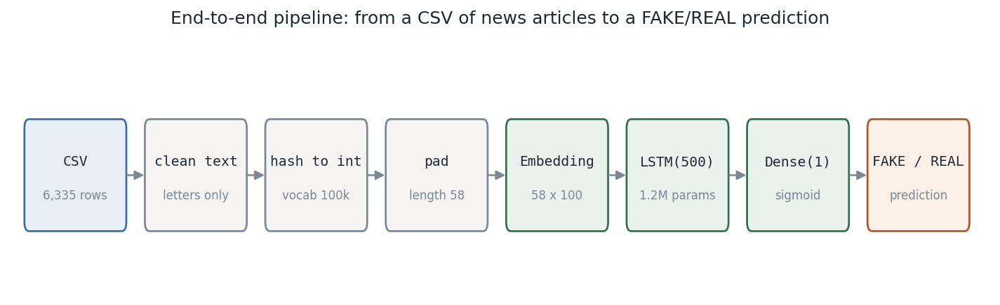
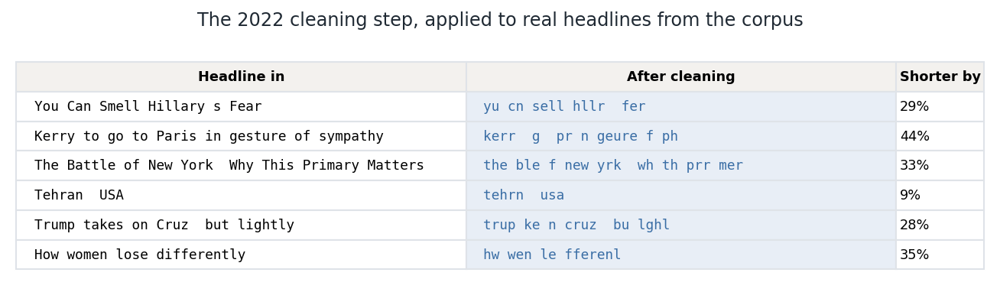
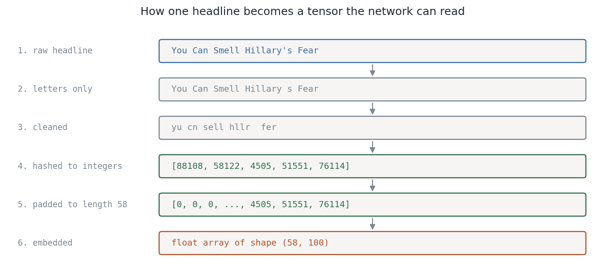
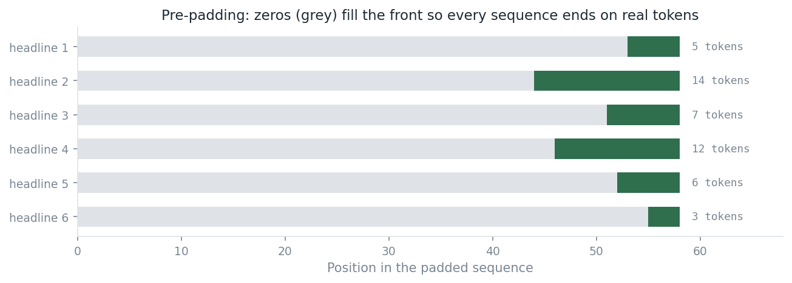
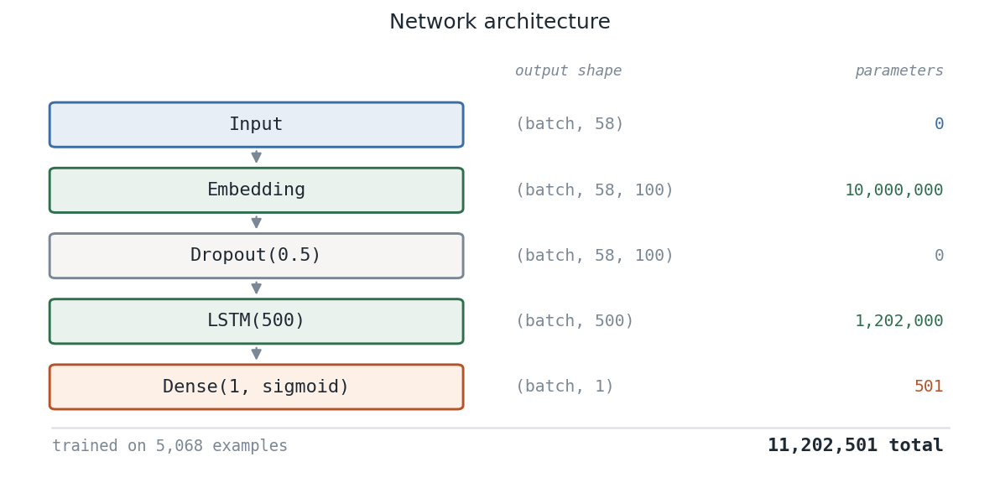
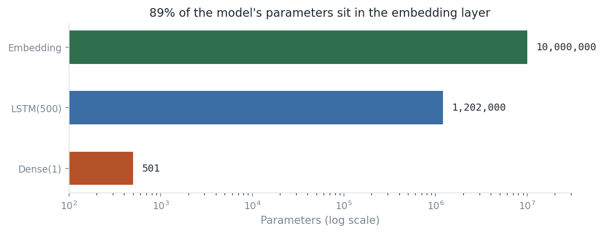
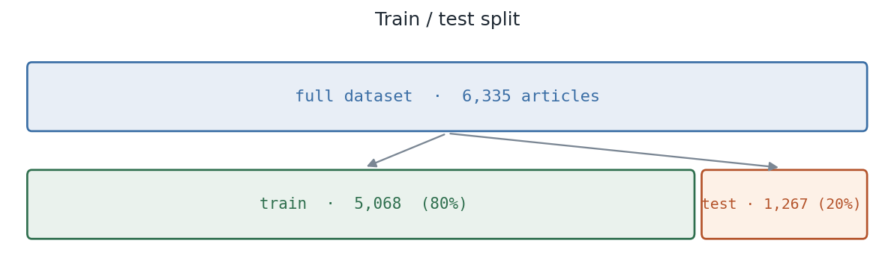
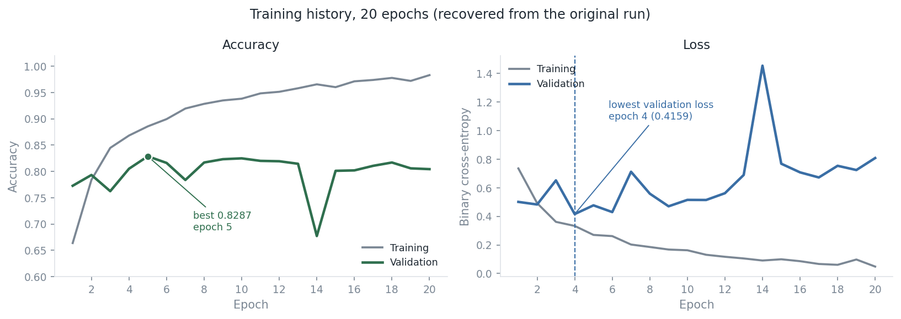

Portfolio · Project 01 · October 2022
A complete walkthrough of a recurrent neural network built in Keras: the dataset, how text becomes tensors, the architecture layer by layer, the training run, and what the results mean.
A dataset of news articles, each carrying a label of FAKE or
REAL. The task is to read an article's text and predict its label.
This is text classification — learning which patterns of language go with which label. A neural network suits it because word order carries meaning: "officials denied the report" and "the report denied officials" use identical words and mean different things.
Why an LSTM. A Long Short-Term Memory network reads a sentence one word at a time, carrying a running memory of what it has seen. Unlike a bag-of-words model it is sensitive to order and to dependencies that stretch across a whole sentence.
Eight stages take raw CSV text to a prediction.

fake_or_real_news.csv — 6,335 news articles in four columns.
| Column | Contents | Used? |
|---|---|---|
Unnamed: 0 | The original CSV row index | No — dropped |
title | The article headline | Yes |
text | The article body | Yes |
label | FAKE or REAL | Target |
Unnamed: 0 is the index pandas wrote when the CSV was saved — a
row counter, not information about the article — so it is dropped before
anything else happens.
It is third-party news text with unclear redistribution terms. The
data/README.md file records what it is and how to supply your
own. Every figure on this page is built from the original run's saved
outputs, so the walkthrough stands without it.
A network works in numbers, so FAKE and REAL become 0 and 1.
get_dummies produces one column per label value, ordered
alphabetically. Keeping column 1 gives a single binary target.
Raw headlines carry punctuation, capitalisation, digits, and common words that add little signal. Cleaning normalises all of it in two passes.
Pass 1 — strip non-letters. A regex replaces anything outside
a–z and A–Z with a space. Apostrophes, commas, and
digits all go, leaving words separated by whitespace.
Pass 2 — stem and drop stop-words. Each headline goes through
NLTK's Porter stemmer and English stop-word list. Because that list includes
eight single-character entries (a d i m o s t y), the pass also
compresses each headline into a shorter form while keeping word boundaries
intact.

legacy_char_clean() in src/preprocessing.py
and pinned by tests against the original saved output.

Keras one_hot assigns each word an integer in [1, 100000).
Despite the name, one_hot returns one integer per
word, not a one-hot vector. It applies a hash function, so no
vocabulary object is stored and the mapping cannot be inverted afterwards.
An LSTM needs every sequence the same length. The longest headline in the corpus is 58 tokens, so every sequence is padded to 58.

padding='pre' puts zeros at the front. A recurrent network's
final state is most influenced by what it read last, so ending on real words
rather than padding gives a better summary.
After this stage the whole corpus is a single integer matrix of shape (6335, 58).

Embedding(100000, 100) — a lookup table
holding one learned 100-dimensional vector per word ID. Words used in similar
contexts drift toward similar vectors during training, so the model learns
meaning rather than treating word #4505 and #4506 as unrelated.Dropout(0.5) — randomly zeroes half the
values on each training pass, so the network cannot lean too hard on any
single feature.LSTM(500) — reads all 58 positions in order,
updating an internal memory at each step, and emits one 500-value summary of
the sequence. Its gates decide what to keep and what to forget.Dense(1, sigmoid) — collapses those 500
values into a single number between 0 and 1: the probability the article is
REAL.
Loss function. Binary cross-entropy, the standard pairing with a sigmoid output. It penalises confident wrong answers far more than uncertain ones — predicting 0.99 for a FAKE article costs much more than predicting 0.55.


| Metric | Epoch 1 | Best | Epoch 20 |
|---|---|---|---|
| Training accuracy | 0.6638 | 0.9830 | 0.9830 |
| Validation accuracy | 0.7727 | 0.8287 ep 5 | 0.8043 |
| Training loss | 0.7353 | 0.0483 | 0.0483 |
| Validation loss | 0.5010 | 0.4159 ep 4 | 0.8080 |
The model works. 82.9% accuracy on articles it never trained on, against a roughly balanced two-class problem where guessing scores about 50%. It learned something real about the language of the two classes.
Most of the learning happens early. Validation accuracy is already 0.7727 after a single epoch and peaks by epoch 5. The remaining fifteen epochs move it very little.
Training and validation diverge. Training accuracy climbs to 0.9830 while validation settles near 0.80. The model fits the training articles more closely than it generalises — expected behaviour when 11.2 million parameters learn from 5,068 examples.
cd 01-fake-news-classifier
python -m venv .venv
source .venv/bin/activate # Windows: .venv\Scripts\activate
pip install -r requirements.txt
pytest # 31 tests
python scripts/make_figures.py # regenerate every figure on this pageTry the cleaning steps directly:
from src.preprocessing import legacy_char_clean, clean_text
legacy_char_clean("You Can Smell Hillary s Fear")
# 'yu cn sell hllr fer'
clean_text("You Can Smell Hillary's Fear")
# 'you can smell hillary s fear'
The model predicts a dataset's label column, and that label is
whatever the dataset's author recorded. A classifier can score well by
learning publisher style, topic, or date range — patterns that are
statistically real and say nothing about whether a claim is true.
Nothing here should be used to judge the truth of an article, the credibility of a source, or the honesty of a person.
The reported numbers come from a single 2022 run on a split made without a fixed random seed. They describe what happened that day; they are not a benchmark and cannot be reproduced exactly.